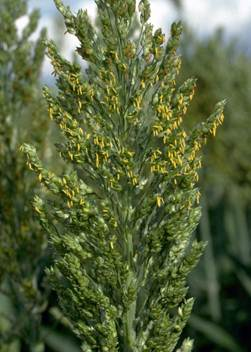
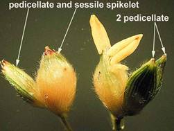
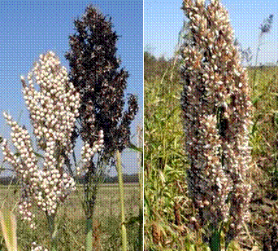
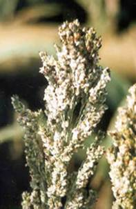
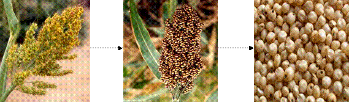

GPBR 112 :: Lecture 11 :: SEED PRODUCTION IN SORGHUM

Sorghum is common millet of India with wider utility. It is used a feed, food and raw material for agri based industry. Botanically it is known as Sorghum bicolor L. and belongs to the family poaceae. It is an often cross pollinated crop, insects and wind are the pollinating agents.
Floral biology
 Sorghum is an often cross-pollinated crop. The extent of out crossing is 6-45% and depends on nature of earhead. In loose panicles the cross-pollination is more and less in compact panicle. Spikelets occur in pairs on the lateral branches of the panicle. One is sessile while the other spikelet is pedicelled. Sessile is bisexual and pedicelled spikelet is male or sterile. Sessile spikelet is comparatively larger than staminate spikelet and each spikelet has two florets. Flower opening starts after 2 to 4 days of emergence of panicle from the boot leaf. Flowering starts from the tip of the panicle and proceeds downwards (basipetal). Flowering completes in 7 days. The pollen is viable for 10 to 20 minutes under field conditions. Fertile pollen will be lemon yellow in colour. Older pollen grains will normally turn to orange. Receptivity of stigma starts two days before opening and remains for several days ( 5 days). Flower opening and anthesis will be from 2.00 am to 8.00 am.
VARIETAL SEED PRODUCTION
Open pollination under isolation and selfing by bagging are the common methods of varietal seed production.
Stages of seed multiplication
In sorghum seed is multiplied adopting three generation system, as breeder seed, foundation seed and certified seed as the crop is often cross pollinated crop where the chances for genetic contamination is high.
Popular varieties
In Tamil Nadu , CO 25 CO26, CO 27 ,K5, K7, CO 19, CO 21, K9, BSR 1, CO 26, K4, K8, CO 25, APK 1, K 10, Paiyur 1 and 2 are the popular varieties for grain purpose ,while CO 20 and CO 28 is a fodder sorghum
Season
The best season for production is November- December and the flowering should not coincide either with rain or high RH as it will wash out the pollen and the maturation should coincide with dry weather. The temperature of 37oC is favourable for better seed setting.
Land requirement
The land should be fertile and problem soils will lead to low pollen fertility and will adversely affect the quality and the seed set will be poor. The previous crop should not be the same crop to avoid the occurrence of volunteer plants and if to be the same crop it has to be the same variety and should be certified and has to be accepted for certification. The field should not have any volunteer plants.
Field Standards for isolation
Sorghum field should be isolated from contaminants as follows
Contaminants |
Minimum distance(m) |
|
FS |
CS |
|
Fields of other varieties of grain and dual |
200 |
100 |
Fields of same variety not confirming to varietal purity requirements for certification |
200 |
100 |
Johnson grass (Sorghum halapense) |
400 |
400 |
Forage sorghum with high tillering and grassy panicle |
400 |
400 |
In sorghum differential blooming dates for modifying the isolation distance is not permitted
Seed and sowing
- For production of foundation seed, breeder seed is used as the base material, while for certified seed, foundation seed should be used as the base material. The seed used should be from authenticated source with tag and bill.
- The required seed rate will be 12kg /ha or 4-5kg/ acre.
- The seed are sown at a spacing of 45 x15 cm at a depth of 2-4cm as the plant has adventitious root system.
- In some places seeds are also raised in nursery and transplanted to the main field.
- In the main field seeds are sown either in ridges and furrows or under beds and channels.
- In some places seeds are also raised in nursery and transplanted to the main field at 27-30 days intervals.
- Rainfed - Direct sown 15.0 kg., Irrigated - Direct sown 10.0 kg / ha and transplanted 7.5 kg/ha
Presowing seed treatment
The seeds are given with any one of the seed treatment or in combination.
- Seeds are soaked in 2% KH2PO4 for 16h with a seed to solution ratio of 1:0.06 and are dried back to their original moisture content of 8-9% .This management could be used both for dry land agriculture as well as garden land.
- As an ecofriendly treatrment seeds are also fortified or hardened with 1% prosopis and pungam leaf extract for 16h with a seed to solution ratio of 1:0.06 and are dried back to their original moisture content of 8-9%.
- Seeds are also treated with 5% carbofuran 3G to protect the seed from shoofly infection. Seed treatment with chlorpyriphos @4 ml /kg is also recommended against the attack by shoot fly.
- Seeds are dry dressed with bavistin @2g/kg of seed to protect against seed borne pathogens and soil borne pathogen.
- Seeds are also treated with azospirillum @50g/kg of seed to fix atmospheric N. Any one of these treatment or combination of treatment is adopted for better productivity.
- On adoption of sequence of treatment physiological should be followed with physical seed treatment.
- Seed treatment with 10% prosopis leaf extract reduces the black mould attack, which can even be given as foliar spray at the time of maturation.
Nutrient application
- At last ploughing apply 12.5 tonnes of compost per hectare.
- The fertilizer requirement of seed crop is 150:50:50 kg of NPK, in which
100:50:50 kg / ha of NPK is applied as basal, while 25kg of N is applied after
first weeding and the remaining 25 kg of N is applied after boot leaf stage.
- The seed crop is also sprayed with 2% DAP at primordial initiation stage and
twice thereafter at 10 days interval.
- In calcarious soil and in problem soils FeSo4 0.5 % is sprayed thrice at 10days
interval from primordial initiation stage.
Weeding
- Application of atrazine @ 10ml per litre as pre-emergence herbicide control the growth of weeds upto 20-25 days.
- One hand weeding at the time of primordial initiation keep the field free of weeds. Weeding after boot leaf stage is not economical.
- On organic production, 2 hand weeding at seedling stage and other at boot leaf formation will keep the field weed free
- At 15-20 days after sowing furadon granules are placed at leaf whorls to avoid shootfly infection.
Irrigation
The crop should be irrigated once in a week for enhanced seed set and formation of bolder grains. The critical stages of irrigation are primordial initiation stage, vegetative stage, milky and maturation stage. If the irrigation is withheld in these stages seed set will be poor and seed size will be reduced.
Pest and disease management
Common pests |
Management techniques |
Shootfly |
Monocrotophos 0.03% |
Stemborer |
Rogar 0.3% |
Gall midge |
Endosulphan 0.07% |
Earhead bugs |
Endosulphan 0.07% |
Black mould and sugary disease |
Endosulphan 0.07% + Bavistin @10g /lit. |
Kernal smut and head smut |
Endosulphan 0.07% + Bavistin @10g /lit. |
Kernal smut and head smut are known as designated diseases of sorghum.
Roguing
It is specific to seed crop and is done from seedling stage to harvesting stage based on the phenotypic characters. Off types can be identified through stem colour, plant structure, number of leaves, auricles, nodal colour, grain colour etc. The field standard for seed crop is as follows
Specific standard: These are verified at the final inspection
Factor |
Maximum permitted (%) |
|
FS |
CS |
|
Off types at any one inspection and after flowering |
0.050 |
0.020 |
Heads infected by kernel smut or grain smut |
0.050 |
0.020 |
Seed fields can however be certified if diseased earheads are removed and burnt and the fields show on reinspection not more than maximum permissible level. Only one such re-inspection is permitted. Seed fields should be thoroughly roughed to remove plants infected by sugary disease (Sphacelotheca sorghi (Link) Clinton)/ergot (Claviceps spp.) so that the prescribed standards are met at seed stage. However, the seed fields shall not be rejected on account of the apresence of sugary/ ergot infected heads.

Smut Ergot

Seed Certification
Number of Inspections
A minimum of three inspections shall be made as follows:
1. The first inspection shall be made before flowering on order to verify isolation, volunteer plants, and other relevant factors,
2. The second inspection shall be made during flowering to check isolation, offtypes and other relevant factors
3. The third inspection shall be made at maturity and prior to harvesting to verify true nature of plant and other relevant factors
Preharvest sanitation spray
Spraying of endosulphan @ 0.07% and bavistin@10g /lit 10 days prior to harvest prevent the seed weevil infestation at storage.
Harvesting
- The crop attains physiological maturity 40-45 days after 50% flowering and the seed moisture at this stage will be around 25-30%.
- This stage can be easily be identified by the formation of dunken layer at the place of attachment to the ear head.
- The earheads are harvested commercially when 80 % of the earheads are physiologically matured, where the moisture content will be around 20 %.
- The crop is harvested as once over harvest as uniformity will be maintained with earheads on maturity.
Threshing
The earheads are dried under sun and threshed with fliable stick for extraction of seeds. The moisture content of seed at the time of threshing will be 15-18%.
On large scale production LCT threshers are used, but care should be given to avoid mechanical damage, which in turn will reduce the seed quality and storability.
Drying
The seeds are dried to 8-10 % moisture content either under sun or adopting mechanical driers for long term storage as the seeds is orthodox in nature.

Processing
- Mechanical grading can be done with cleaner cum grader, which will remove the
undersized immature and chaffy seeds
- The middle screen size should be 9/64” round perforated sieves. The size can
vary depending on the type of seed
- For fodder sorghum 8/64”sieve is used
Seed treatment
The seeds are infested with several storage pests, to protect against these pests the seeds are given protective treatment with bavistin @2g/kg of seed with carbaryl @200mg/kg of seed as slurry treatment. Bifenthrin @5mg /kg of seed is also recommended for fodder sorghum.
Seed packing
Seeds are packed in gunny bag for short term storage while in HDPE and polylined gunny bag for long term storage.
Storage
- The treated seed can be stored up to 12 months provided the seeds are not infected with storage pests.
- Seed can be stored up to 3 years if the seeds are packed in moisture containers and are stored at low temperature .
- The godown should be kept clean as the possibility of secondary infestation with Trifolium (red flour weevil ) is much in these crop.
Seed yield : 3000-4000kg/ha
Seed standard
The processed seed should have the following seed quality characters both for certification and labeling.
Seed Standard
Factor |
Standards for each class |
|
Foundation |
Certified |
|
Pure seed ( maximum) |
98.0% |
98.0% |
Inertmatter(maximum) |
2.0% |
2.0% |
Other crop seed (maximum) (by number) |
5/kg |
10/kg |
Total weed seed (maximum) (by number) |
5/kg |
10/kg |
Other distinguishable varieties (maximum) |
10/kg |
20/kg |
Ergot, sclerotia, seed entirely or partially modified as sclerotia, broken or ergotted seed (maximum) |
0.020% |
0.040% |
Germination ( Minimum) |
75% |
75% |
Moisture (maximum) |
12.0% |
12.0% |
For vapour proof container (maximum) |
8.0% |
8.0% |
Mid storage correction
The seeds loose their quality during storage due to deterioration and pest infestation, when the germination falls below 5-10 % of the required standard the seeds are imposed with midstorage correction, where the seeds are soaked in double the volume of 10-4 M solution of disodium hydrogen phosphate (3.6mg/lit of water) for 6 hours and the seeds are dried back to original moisture content (8-9%).
| Download this lecture as PDF here |